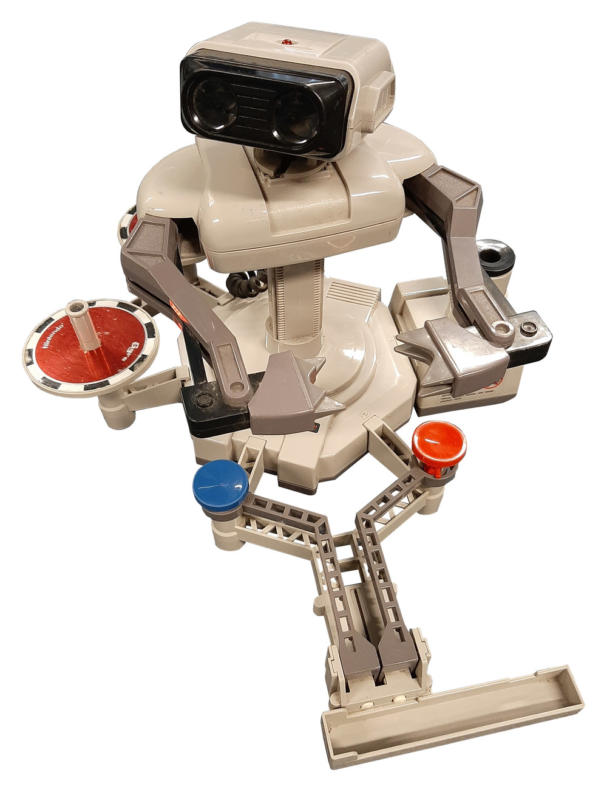

Nintendo R.O.B.
A physical robot companion that played NES games with you, commanded by light flashes from the TV screen

Overview
R.O.B. (Robotic Operating Buddy, model NES-012) is a 9.5-inch-tall, battery-powered robot companion for the Nintendo Entertainment System, released in 1985. Unlike every other game peripheral before or since, R.O.B. is an output device: the NES sends commands to the robot through light flashes on a CRT screen, and the robot physically manipulates objects beside the TV. A phototransistor in R.O.B.'s head detects flashing green and black squares synchronized to the NTSC vertical blanking interval. A Sharp IR3T07 decoder chip translates the 13-bit pulse sequences into motor commands — UP, DOWN, LEFT, RIGHT, OPEN, CLOSE — and three DC motors move the robot's arms and rotating base.
Only two games were produced for R.O.B.: Gyromite, where the robot pressed controller buttons by placing spinning tops on trays, and Stack-Up, where it assembled colored blocks into patterns. The robot was discontinued by 1988. Its real significance, however, was strategic: after the 1983 video game crash, retailers refused to stock game consoles. Nintendo bundled R.O.B. with the Deluxe Set NES to recast the system as a futuristic toy rather than a video game console, successfully gaining placement in toy aisles. R.O.B. was a Trojan horse — and the horse was a robot.
Deep dive
R.O.B. was developed by Nintendo R&D1, the hardware team led by Gunpei Yokoi, who had already created the Game & Watch series and would go on to design the Game Boy and the D-pad. Yokoi is the named inventor on both US patents (4,729,563 and 4,815,733) covering R.O.B.'s photosensing control system. The same optical technology was used in the NES Zapper light gun. On the North American side, the product was named 'Robotic Operating Buddy' by Gail Tilden, Nintendo of America's sole marketing staff member at the time, who also designed the NES branding and packaging that deliberately avoided the term 'video game.' Industrial designer Lance Barr gave the NES and R.O.B. their distinctive gray/black 'hi-fi component' aesthetic, which helped position the system alongside VCRs and stereos rather than game consoles.
R.O.B. receives commands through optical signaling. The NES game software draws flashing patterns of green (bright) and black (dark) rectangles in a specific area of the CRT screen, synchronized to the TV's 60 Hz refresh rate. Each command is a 13-bit pattern: a 5-bit preamble (00010) followed by an 8-bit command byte. Six movement commands are supported: UP, DOWN, LEFT, RIGHT, OPEN, and CLOSE, plus a TEST command that lights R.O.B.'s head LED to confirm line-of-sight alignment. The robot contains three DC motors: one in the base for body rotation (300°, 5 stopping points), and two in the torso — one for vertical arm movement (2.75 inches of travel, 6 stopping points) and one for the pincer gripper (2.75 inches opening). R.O.B. has no limit switches; it uses timed friction clutches, which means old units frequently break. The motors make a loud grinding noise when operating. A critical limitation: R.O.B. only works with CRT televisions. LCD and plasma displays cannot reproduce the precise frame-timing that the optical protocol depends on.
R.O.B.'s interaction model is unique in consumer electronics history. It is an output peripheral — the computer sends commands into physical space through light, and a physical actuator responds by manipulating real objects. In Gyromite, the player uses a standard NES controller to play a puzzle-platform game. When R.O.B. needs to press a button on the second controller, the player presses START plus a direction on the D-pad, and the game flashes the command. R.O.B. picks up a spinning top from a motorized spinner, rotates to position over a colored tray, lowers the top onto the tray, and the tray's button depresses either the A or B button on controller 2. The game detects the controller input and opens or closes gates. This chain — player intention → D-pad input → software-rendered light flashes → phototransistor detection → motor actuation → physical object manipulation → second controller button press → game response — is an extraordinarily indirect control loop. It bridges the digital and physical worlds using nothing more than the TV screen that was already there.
After the North American video game crash of 1983, the market collapsed from $3.2 billion to roughly $100 million. Retailers refused to stock video game consoles. Nintendo of America, under president Minoru Arakawa, made a deliberate decision: reclassify the NES as a toy, not a video game console. Every aspect was redesigned — the Famicom became the 'Nintendo Entertainment System,' cartridges became 'Game Paks,' the console was styled like a VCR with a front-loading cartridge slot, and the entire system was sold in the toy aisle. R.O.B. was the centerpiece of this strategy. The Deluxe Set ($249.99 in 1985, roughly $600+ today) bundled the NES with R.O.B., the Zapper light gun, Gyromite, and Duck Hunt. The New York City test market launched on October 18, 1985. A 12-person 'SWAT team' set up displays at 500 stores through Christmas Eve. 50,000 Deluxe Sets sold that holiday season. A January 1986 Nintendo survey found that R.O.B. was the #1 reason children wanted the NES — ahead of graphics, game variety, or anything else. But once Super Mario Bros. arrived in 1986, the standard controller proved the superior experience, and R.O.B. was quietly discontinued by 1988. The robot had done its job.
R.O.B. is a landmark in physical computing — one of the earliest mass-market consumer devices where a computer program directly controls a physical actuator in the user's environment. The CRT flash protocol is a clever repurposing of existing display technology as a data link, anticipating modern techniques like screen-mediated device pairing and Li-Fi. And the artifact embodies a lesson about how industrial design, naming, and physical form factor can redefine a product category: a plastic robot companion transformed a dead product category into a billion-dollar industry. R.O.B. has become a beloved platform for hardware hackers; the AtariAge community reverse-engineered the undocumented Sharp IR3T07 protocol in the 2010s, and projects range from Bluetooth-controlled 3D-printed replacement parts to complete R.O.B. 2.0 rebuilds.
Team & pioneers
- Gunpei Yokoi. Inventor, patent holder, head of Nintendo R&D1. Designed R.O.B.'s photosensing control system. Also created the D-pad and Game Boy.
- Gail Tilden. Nintendo of America's advertising manager. Named the product 'Robotic Operating Buddy' and led the marketing strategy that recast the NES as a toy.
- Lance Barr. Industrial designer. Created the NES/R.O.B. color scheme and the retail point-of-purchase displays topped with oversized R.O.B. heads.
- Don James. Product designer. Worked on R.O.B. coloration, packaging, and display fabrication.
- Howard Phillips. Warehouse manager who unboxed the first R.O.B. shipment, conducted early demos, and worked the mall tour circuit. Later became the face of Nintendo as 'Howard & Nester.'
- Minoru Arakawa. President of Nintendo of America. Made the strategic decision to bundle R.O.B. and budgeted $50 million for the New York test launch.
Media

Sources
- Wikipedia — R.O.B.
- US Patent 4,729,563 — Yokoi, 'Robot-like game apparatus'
- US Patent 4,815,733 — Yokoi, 'Photosensing video game control system'
- IGN — 'In Their Words: Remembering the Launch of the NES' (2015 oral history)
- Video Game History Foundation — 'The NES Launch Collection'
- GitHub: zfields/nes-rob — Complete reverse-engineering of R.O.B. protocol
- Hackaday — 'Retro Gadgets: Nintendo R.O.B Wanted To Be Your Friend' (2023)
- Polygon — 'Here's how Nintendo announced the NES in North America'
- AtariAge Forum — Reverse-engineered command protocol (Tursi, 2011)
- Chris Kohler, 'Power-Up: How Japanese Video Games Gave the World an Extra Life' (2004)